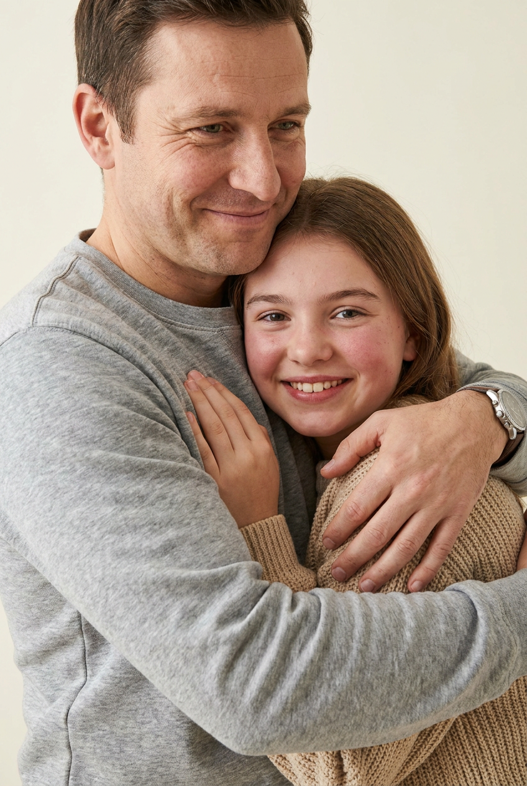
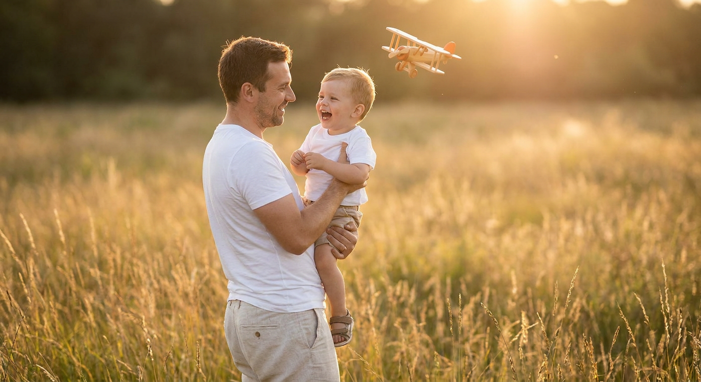
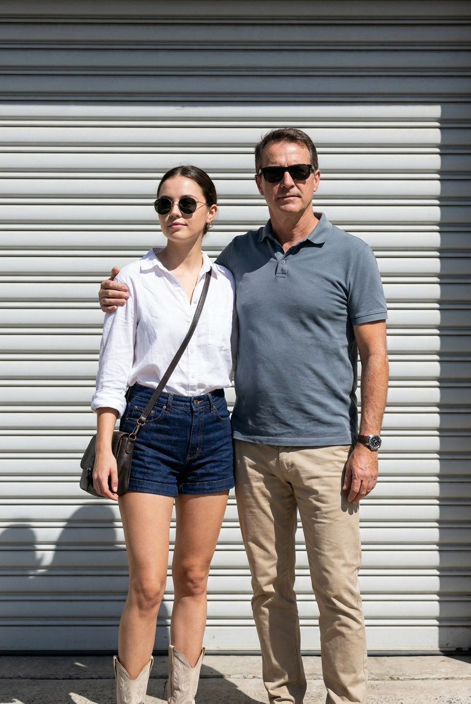
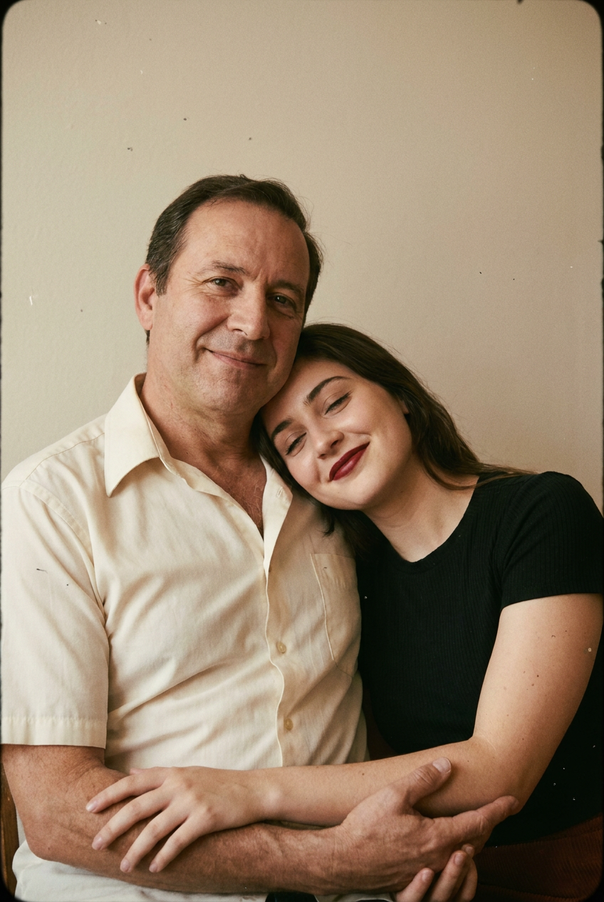
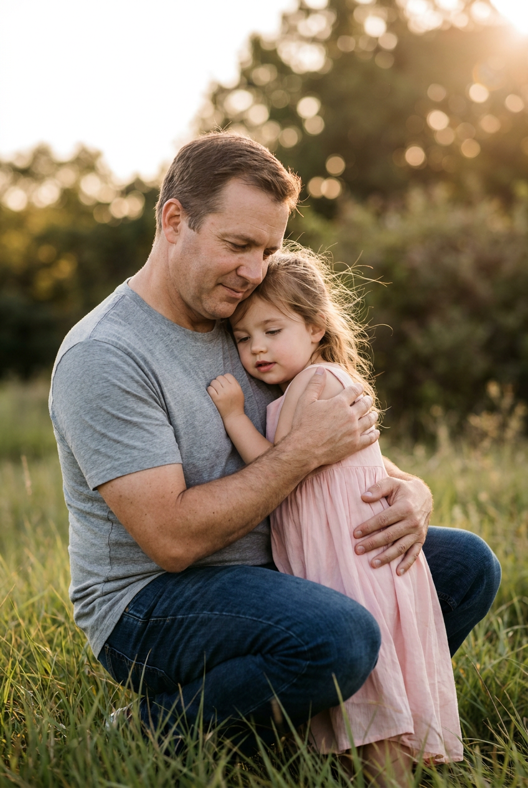
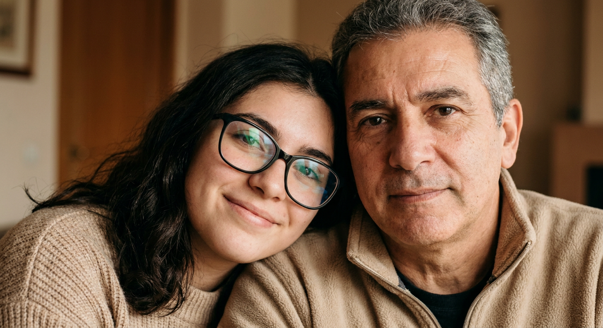
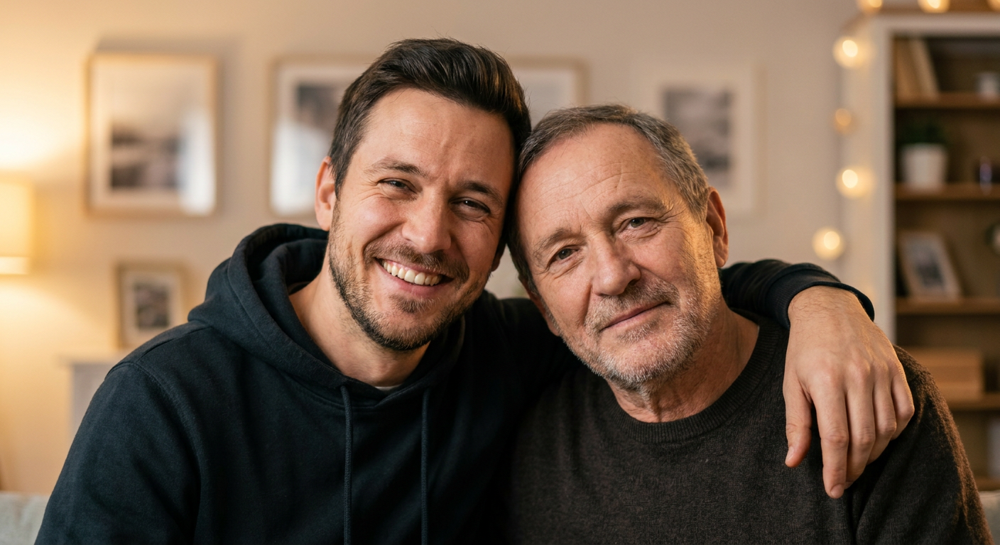
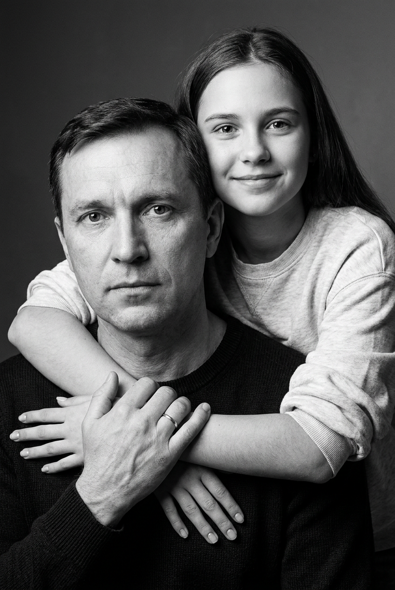
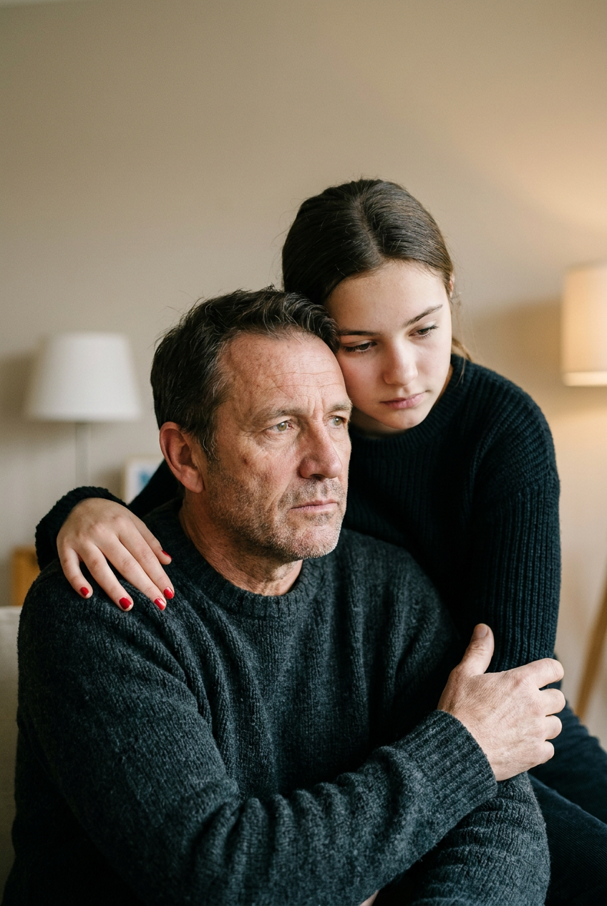
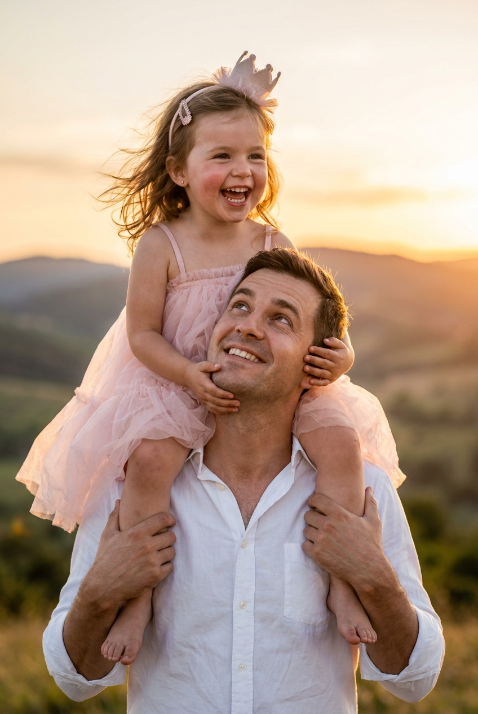

10 промптов для ИИ-фото с папой: нейросеть

Обычная фотография с папой не всегда получается: кто-то живёт далеко, не любит камеру или не успел сохранить важные моменты. Генерация помогает собрать такой кадр из референсов — с нужной одеждой, светом, позой и настроением.
Внутри — 10 готовых сценариев: от студийного объятия и домашнего портрета до снимка в пшеничном поле, чёрно-белой постановки и фотографии дочери на плечах у отца. Промпты можно использовать как основу и адаптировать под свои фотографии.
Как сгенерировать такое фото: пошагово
Нужен снимок анфас при ровном свете, лицо в кадре целиком, без тёмных очков и головных уборов. Разрешение от 1000 пикселей по короткой стороне. Чем чётче исходник, тем точнее модель повторит черты.
Выберите сценарий ниже и нажмите «Копировать» — текст уйдёт в буфер целиком, вместе с командой сохранения внешности. Эта команда стоит первой строкой и отвечает за то, чтобы на выходе было ваше лицо, а не случайное.
Кнопка «Сгенерировать» рядом с каждым промптом открывает модель в новой вкладке. Nano Banana Pro работает с референсом лица — в отличие от моделей, которые генерируют портрет с нуля и узнаваемость теряют.
Промпт — в поле ввода, портрет — через загрузку референса. Порядок значения не имеет, но без референса команда сохранения внешности работать не будет: модели нечего сохранять.
Для сторис и ленты берите 9:16, для превью и обложек — 4:3. Первый результат редко идеален: если поза или свет ушли не туда, поправьте соответствующую часть промпта и запустите заново. Обычно хватает двух-трёх итераций.
10 промптов для генерации
1. Тёплое объятие в студии
Строго сохранить внешность по загруженному референсу: черты лица, пропорции, мимику и текстуру кожи без изменений. Вертикальный фотореалистичный студийный портрет на почти белом или кремовом фоне, крупный план по пояс. Отец держит взрослую дочь на руках и мягко прижимает её к себе: одна рука проходит под спиной и плечами, вторая поддерживает корпус у талии. Его тело немного развёрнуто к камере, на лице доброжелательная улыбка, глаза полуприкрыты от радости. На отце серый домашний спортивный костюм или худи из мягкого трикотажа, с естественными складками на рукавах и груди, на запястье заметны часы. Дочь отвечает тёплой улыбкой, у неё живой взгляд и лёгкий румянец; она в светло-бежевом джемпере с мягкой фактурой, видимым воротом и манжетами. Натуральная кожа, правдоподобные руки, мягкий рассеянный свет, объектив 85 мм, f/2.0, высокая детализация, 4K.
2. Смех в золотом поле

Строго сохранить внешность по загруженному референсу: черты лица, пропорции, мимику и текстуру кожи без изменений. Семейный фотореалистичный снимок на закате: высокая золотистая трава или пшеничное поле, тёплый солнечный контровой свет и мягкое боке вдали. Отец стоит в полный рост либо до колен, корпус слегка повёрнут к объективу, и смотрит на маленького сына с радостной улыбкой. На нём белая футболка и светлые бежево-серые брюки из натуральной ткани, на которых видны мягкие складки. Мальчик одет в белую футболку и светлые шорты или ползунки нейтрального оттенка; он смеётся, рот приоткрыт, щёки подняты, взгляд направлен вверх и немного в сторону отца. Покажите живое взаимодействие, естественную позу и ощущение движения в траве. Вертикальный кадр, объектив 50 мм, f/2.2, тёплая цветокоррекция, реалистичные текстуры кожи и ткани, 4K.
3. Городской кадр у роллеты

Строго сохранить внешность по загруженному референсу: черты лица, пропорции, мимику и текстуру кожи без изменений. Уличный портрет в полный рост: отец и взрослая дочь стоят рядом перед светлой металлической роллетой гаражных ворот. Фон состоит из ровных горизонтальных ламелей, лишних предметов нет. Дочь находится слева, слегка развёрнута к камере и уверенно держит голову; на ней круглые или овальные солнцезащитные очки с тёмными линзами, белая рубашка или лонгслив с пуговицами, немного открытым воротом и закатанными рукавами, короткие джинсовые шорты тёмного индиго, светлые казаки, ботинки или кроссовки. Через плечо проходит ремень небольшой тёмной сумки. Отец стоит справа в спокойной повседневной одежде и слегка поворачивается к дочери. Естественные лица по референсам, мягкий дневной свет без жёстких теней, объектив 35 мм, f/4, чёткие детали одежды, вертикальная композиция, реалистичная уличная фотография.
4. Ретро-портрет с близкими

Строго сохранить внешность по загруженному референсу: черты лица, пропорции, мимику и текстуру кожи без изменений. Вертикальная семейная фотография в эстетике плёночного ретро: тёплая винтажная цветокоррекция, лёгкое зерно, мягкий контраст и естественная атмосфера старого фотоальбома. Отец сидит или полуповорачивается к камере, плечи расслаблены, взгляд направлен на зрителя, на лице спокойная доброжелательная улыбка. На нём молочно-белая или кремовая рубашка свободной посадки с короткими рукавами и чуть раскрытым воротом, ткань собирается в натуральные складки. Дочь наклоняется к нему и кладёт голову на плечо, ближе к груди или ключице; её глаза закрыты либо полуприкрыты, выражение нежное, губы слегка улыбаются, на них аккуратная красная или бордовая помада. На дочери чёрная облегающая футболка или топ с короткими рукавами. Плёночная фактура без чрезмерного шума, объектив 50 мм, f/2.8, мягкий тёплый свет, правдоподобные пропорции.
5. Нежность на закатной лужайке

Строго сохранить внешность по загруженному референсу: черты лица, пропорции, мимику и текстуру кожи без изменений. Фотореалистичный вертикальный семейный портрет в парке или на лужайке во время золотого часа. Тёплое солнце подсвечивает траву, фон растворяется в мягком боке. Отец приседает или опускается на одно колено, наклоняя корпус к дочери; он смотрит вниз на ребёнка с заботой и спокойной нежностью. На нём простая серая хлопковая футболка с короткими рукавами и тёмно-синие джинсы, без логотипов, с естественными складками. Дочь стоит рядом с ним в светло-розовом или пудровом платье из лёгкой струящейся ткани без яркого рисунка. Её волосы немного растрёпаны ветром, отдельные пряди выбились у висков; глаза опущены или полуприкрыты, губы едва заметно сомкнуты в расслабленной улыбке. Натуральная мимика, объектив 85 мм, f/2.0, тёплый контровой свет, реалистичная кожа, мягкая глубина резкости.
6. Портрет щекой к щеке

Строго сохранить внешность по загруженному референсу: черты лица, пропорции, мимику и текстуру кожи без изменений. Очень крупный фотореалистичный портрет в неформальном селфи-стиле: дочь слева прижимается лицом к отцу, в кадре почти симметрично видны оба лица целиком, головы повернуты навстречу друг другу. На дочери крупные чёрные очки с заметной оправой, прозрачными бликами и отражениями на линзах, мягкая улыбка и доброжелательное выражение; она одета в тёплый бежевый вязаный свитер или свитшот. Отец справа смотрит прямо в объектив, его выражение спокойное и мягкое, на нём бежевая флисовая или вязаная вещь с хорошо различимым воротом. Руки и посторонние предметы почти не попадают в кадр. Освещение тёплое, рассеянное, с деликатным золотистым оттенком; фон домашний и ненавязчивый, слегка размытый. Объектив 50 мм, f/2.0, естественные поры кожи, точные пропорции лица, высокая детализация, вертикальная композиция.
7. Домашнее объятие сына

Строго сохранить внешность по загруженному референсу: черты лица, пропорции, мимику и текстуру кожи без изменений. Тёплый домашний портрет по пояс, снятый крупным планом при золотистом мягком свете. Отец сидит или слегка развёрнут к камере, голова немного наклонена набок, на лице спокойная доброжелательная улыбка. Взрослый сын крепко обнимает его: одной рукой прижимает отца к себе, второй поддерживает со стороны плеча и спины, пальцы и кисти выглядят естественно. На сыне тёмный повседневный свитер или худи, отец одет в тёплую тёмную одежду. На заднем плане домашняя комната с размытыми рамками, картинами и деталями интерьера, без читаемых надписей. Эмоция кадра — близость и любовь без постановочной театральности. Реалистичные текстуры ткани и кожи, натуральные оттенки, мягкое боке, объектив 85 мм, f/1.8, тёплая цветокоррекция, вертикальный кадр высокого разрешения.
8. Чёрно-белая семейная сцена

Строго сохранить внешность по загруженному референсу: черты лица, пропорции, мимику и текстуру кожи без изменений. Вертикальный чёрно-белый студийный портрет с выразительным мягким светом и плавными градациями серого. Отец находится на переднем плане, сидит или полуповорачивается к камере; видна верхняя часть корпуса, на нём чёрная футболка или тёмный свитер. Его лицо серьёзное и спокойное, взгляд направлен прямо на зрителя. Дочь расположена сзади, почти вплотную и немного выше отца: она лежит или приподнята за его спиной, обнимая его руками. Одно предплечье проходит поперёк плеча и верхней части груди, пальцы естественно согнуты, ногти аккуратно обработаны; вторая рука поддерживает объятие со стороны плеча. У дочери естественный макияж, расслабленная лёгкая улыбка или мягкое нейтральное выражение, взгляд прямо в объектив. Контраст умеренный, кожа и волосы детализированы, объектив 85 мм, f/2.8, студийный свет, классическая чёрно-белая плёнка.
9. Тихий портрет в интерьере

Строго сохранить внешность по загруженному референсу: черты лица, пропорции, мимику и текстуру кожи без изменений. Крупный фотореалистичный портрет в домашнем интерьере. Отец сидит на переднем плане и поддерживает подростка, его лицо задумчивое и спокойное, взгляд направлен в сторону, а не в объектив. На нём графитовый или угольно-чёрный вязаный свитер с заметной фактурой крупной вязки и мягкими складками. Дочь находится сзади и немного выше, в тёмном свитере или лонгсливе; она смотрит нежно и серьёзно вниз или в сторону отца, губы расслаблены. Девушка обнимает его руками: предплечье проходит вокруг шеи и плеча, ладонь лежит на верхней части груди или плече, пальцы выглядят естественно. На ногтях красный или бордовый лак, руки ухоженные. Тёплый рассеянный свет из окна, мягкие тени, спокойная домашняя атмосфера, без пальто и курток в образе дочери. Объектив 70 мм, f/2.0, малая глубина резкости, реалистичная фактура шерсти и кожи, вертикальный кадр.
10. Дочь на плечах у папы

Строго сохранить внешность по загруженному референсу: черты лица, пропорции, мимику и текстуру кожи без изменений. Фотореалистичная семейная фотография на улице во время золотого часа: на заднем плане красивые холмы или горы, открытое небо и тёплый солнечный свет. Отец находится внизу кадра, стоит в пол-оборота и улыбается, подняв взгляд к дочери; выражение лица доброе, радостное и живое. На нём белая хлопковая рубашка с воротником, расстёгнуты одна-две верхние пуговицы, на ткани видны естественные складки. Дочь сидит у него на плечах, её волосы слегка растрепал ветер, в причёске заметны заколка или ободок и тонкая декоративная корона. На ней воздушное нежно-розовое платье из тюля с пышной юбкой, мягко фактурным верхом и тонкими бретелями. Она смеётся с приоткрытым ртом, широко раскрыты глаза, щёки слегка розовые. Праздничное, но естественное настроение, объектив 35 мм, f/2.8, тёплый контровой свет, детализированные ткани, вертикальная композиция, 4K.
Что важно учесть в этом стиле
Семейный кадр держится не на количестве деталей, а на понятном взаимодействии. Сначала задайте, кто где находится, куда направлен взгляд и какая рука поддерживает другого человека. Это снижает вероятность лишних пальцев, неестественных объятий и случайных поз.
Для нежных сцен лучше работают объективы 50–85 мм, открытая диафрагма f/1.8–2.8 и мягкий свет. На улице добавляйте golden hour, контровое солнце и боке; для ретро-портрета — плёночное зерно, тёплый баланс и умеренный контраст. Референсы лиц прикладывайте отдельно и проверяйте результат после каждой генерации.
Идеи для вариаций
- Замените студийный фон на светлую кухню, библиотеку или веранду.
- Попросите сделать кадр после дождя: мокрая трава, отражения и прохладный рассеянный свет.
- Добавьте семейную деталь — старые часы, папину куртку, букет полевых цветов или снимок в рамке.
- Сделайте серию в одном стиле: цветной портрет, чёрно-белый кадр и плёночная версия.
- Поменяйте вертикальный формат на квадрат 1:1 для аватара или открытки.
Как собрать свой промпт
Разделите описание на пять частей: место, герои, одежда, поза и свет. Сначала укажите формат кадра и крупность, затем опишите отца и ребёнка по отдельности. После этого зафиксируйте контакт между ними: «держит на руках», «кладёт голову на плечо», «смотрит вверх».
В финале добавьте съёмочные параметры: объектив 50 или 85 мм, диафрагму, характер фона, цветокоррекцию и разрешение. Не перегружайте запрос взаимоисключающими условиями. Если лицо получилось неточно, меняйте по одному параметру и делайте 3–5 новых попыток, а не переписывайте весь текст.
Ошибки, из-за которых кадр не получается
- Слишком общая поза. Фраза «они обнимаются» не объясняет положение рук и направление корпуса.
- Много конкурирующих деталей. Несколько нарядов, локаций и типов света одновременно сбивают композицию.
- Нет указания на крупность. Без слов «по пояс», «крупный план» или «в полный рост» нейросеть сама выбирает кадрирование.
- Сложные руки остаются без контроля. Для объятий отдельно описывайте предплечья, ладони и пальцы.
- Нереалистичная мимика. Лучше выбрать одну эмоцию и конкретный взгляд, чем перечислять радость, грусть и удивление сразу.
Частые вопросы
Как сделать такое ИИ-фото бесплатно?
Для первых попыток подойдут Kandinsky и «Шедеврум»: у них можно генерировать изображения без оплаты, но число попыток, скорость и доступные функции меняются. Krea AI и Arena.ai позволяют тестировать разные режимы, однако бесплатный доступ обычно ограничен очередью или кредитами. Референс лица поддерживается не во всех режимах: иногда сервис меняет черты, возраст или пропорции. Загружайте только фотографии, на использование которых у вас есть разрешение.
Как сохранить сходство с папой и ребёнком?
Используйте чёткие фронтальные референсы без сильных фильтров, очков и перекрывающих лицо волос. Для каждого человека лучше подготовить отдельное изображение. В промпте не смешивайте описания лиц, а после генерации проверяйте глаза, линию подбородка, нос и возраст. Если сходство слабое, повторите запрос с той же сценой и более простым фоном.
Почему нейросеть искажает руки в объятиях?
Объятия создают сложное пересечение рук, особенно когда один человек держит другого на руках или сидит за спиной. Описывайте каждую руку отдельно: где находится предплечье, куда направлена ладонь и какие пальцы видны. Помогают также крупный план по пояс, спокойная поза и несколько последовательных генераций.
Можно ли сделать из результата настоящую семейную открытку?
Да. Сгенерируйте вертикальный кадр с запасом свободного места сверху или сбоку, затем добавьте текст в графическом редакторе. Для печати выбирайте максимально доступное разрешение, избегайте мелких деталей на лицах и заранее задайте соотношение сторон. Перед публикацией убедитесь, что все участники согласны на использование изображения.